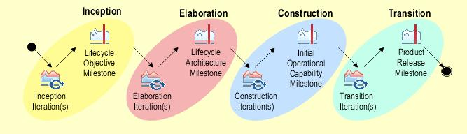

| Delivery Process: Ciclo de Vida do OpenUP |
 |
|
| Description | Work Breakdown Structure | Team Allocation | Work Product Usage | ||||||
Workflow

|
Work Breakdown
Este programa e o material que o acompanha são disponibilizados sob a |
Workflow
Work Breakdown
|
||||||||||||||||||||||||||||||||||||||||